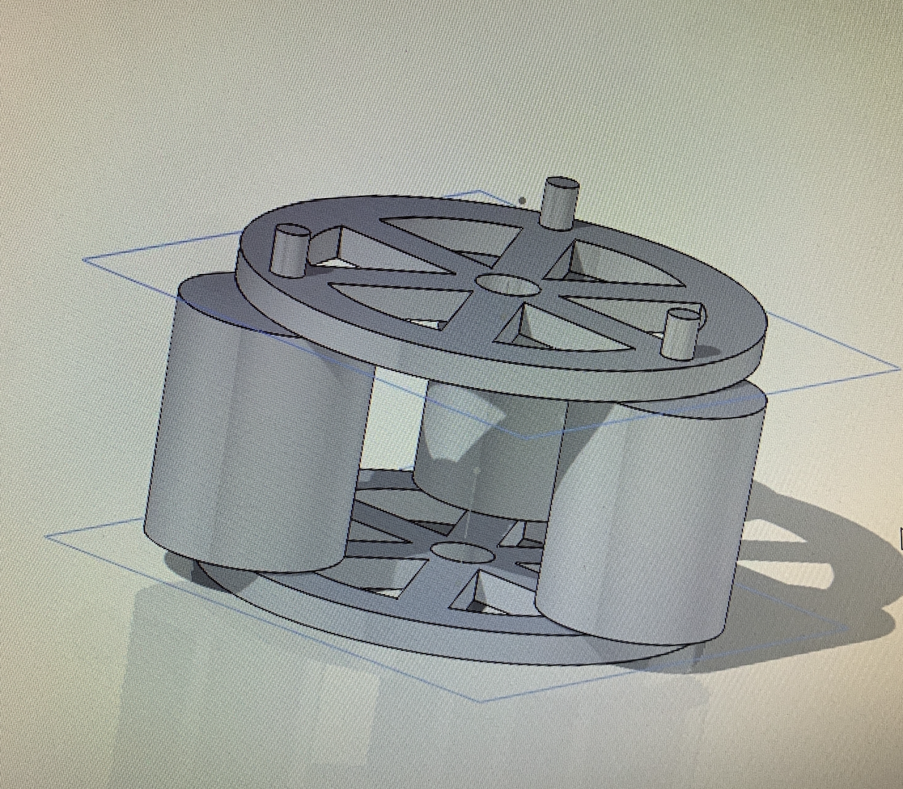
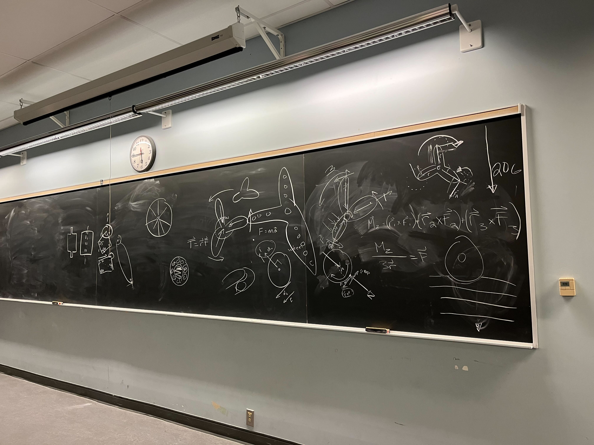

June 2023 - April 2024
Initiated a project to make blood transfusion possible in space, as the payload component of the Waterloo Rocketry annual project.
This involved researching, designing, and developing a peristaltic pump created to adapt to extreme-gravity environments for the duration of the launch.
Researched blood flow rates of various populations to optimize blood transfusion for all demographics.
Contributed to concept generation, researching blood flow rates and mechanics of peristaltic pumps, force and dynamics calculations, and collaborative SolidWorks designs.

